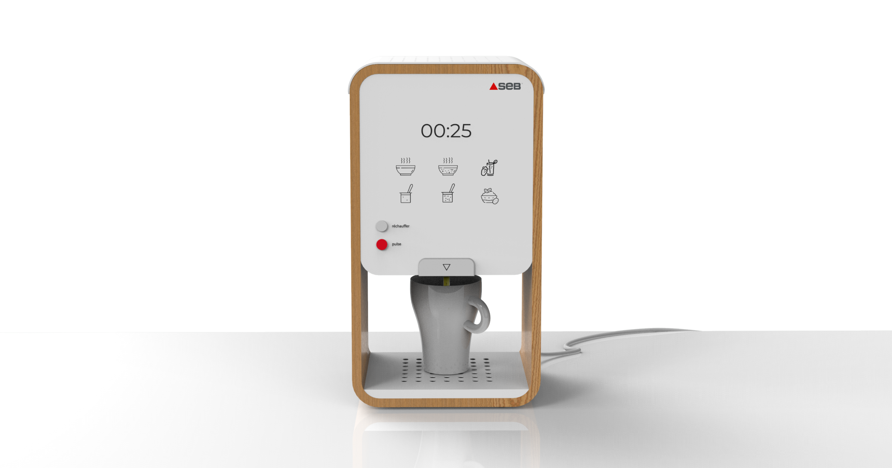
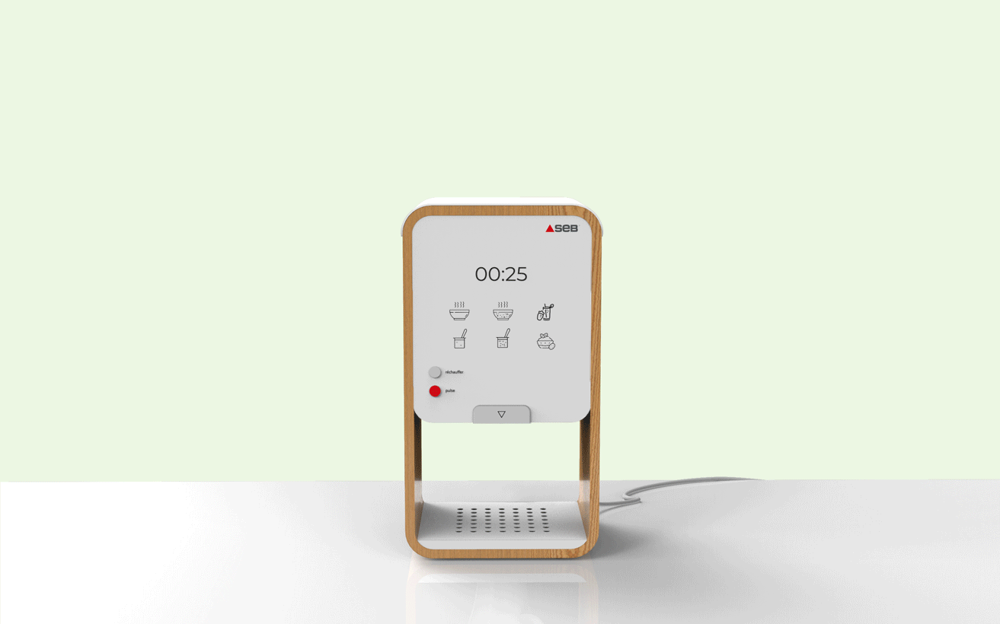
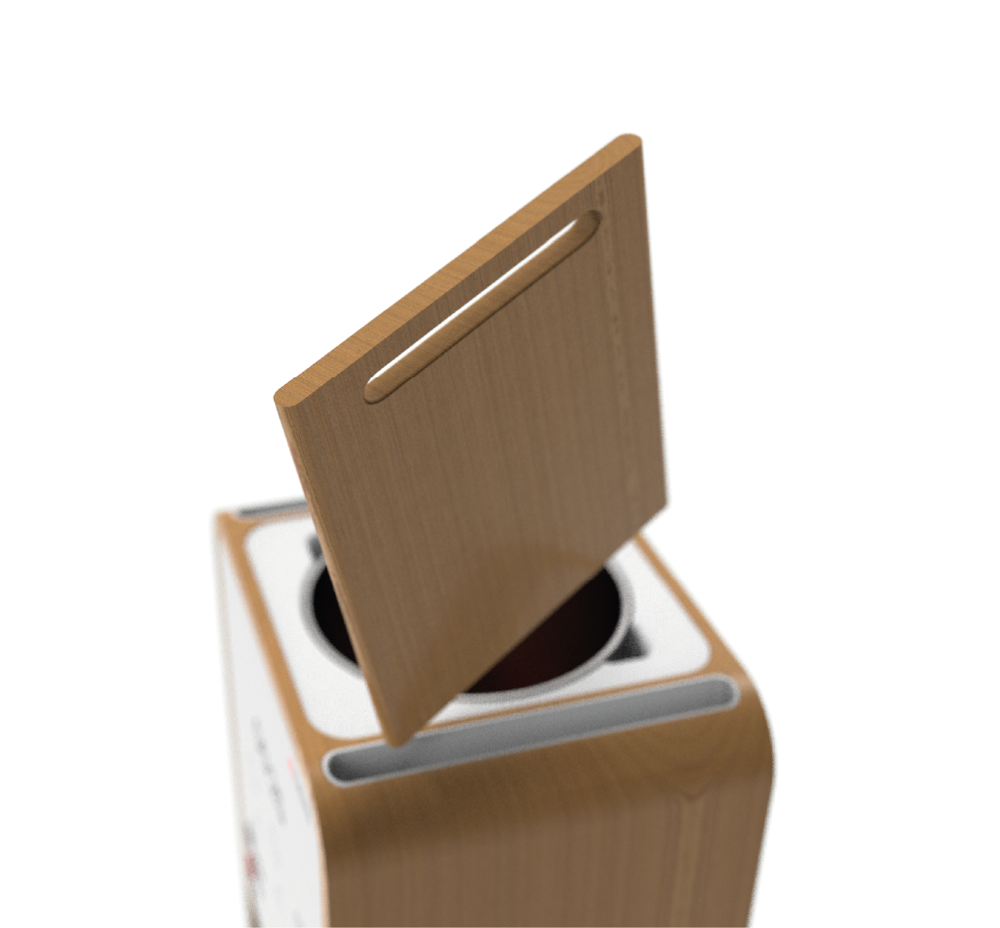
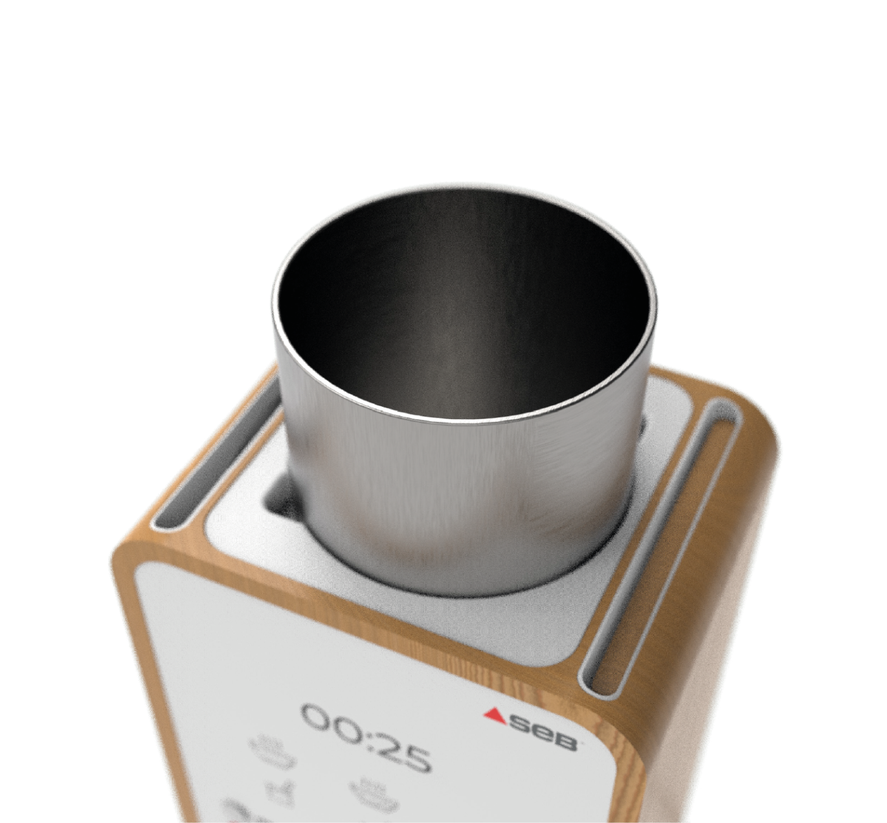
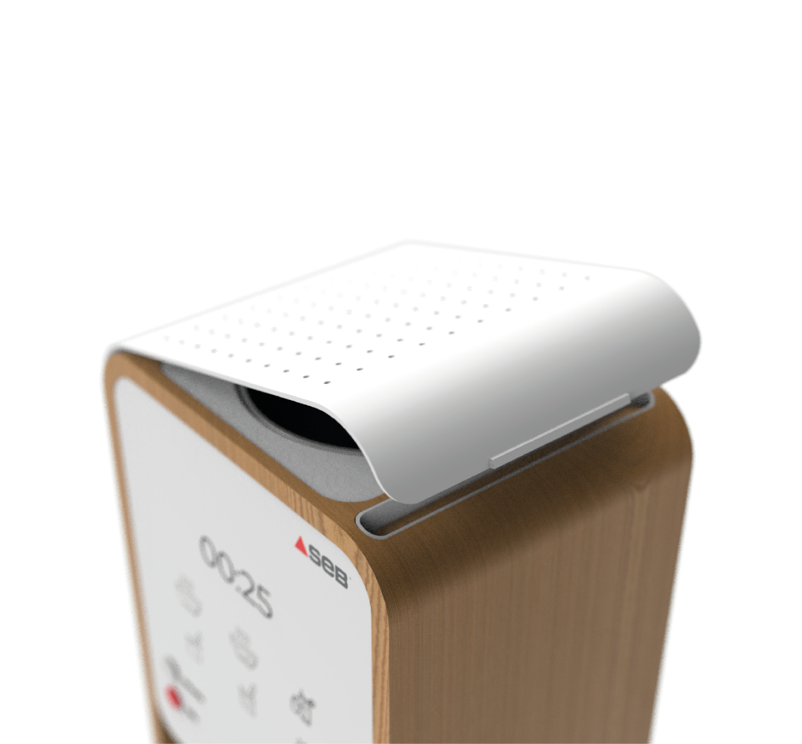
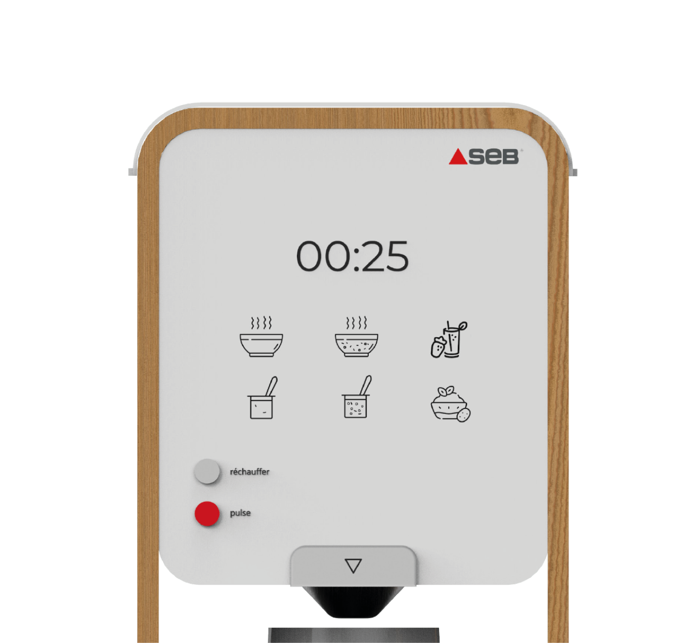
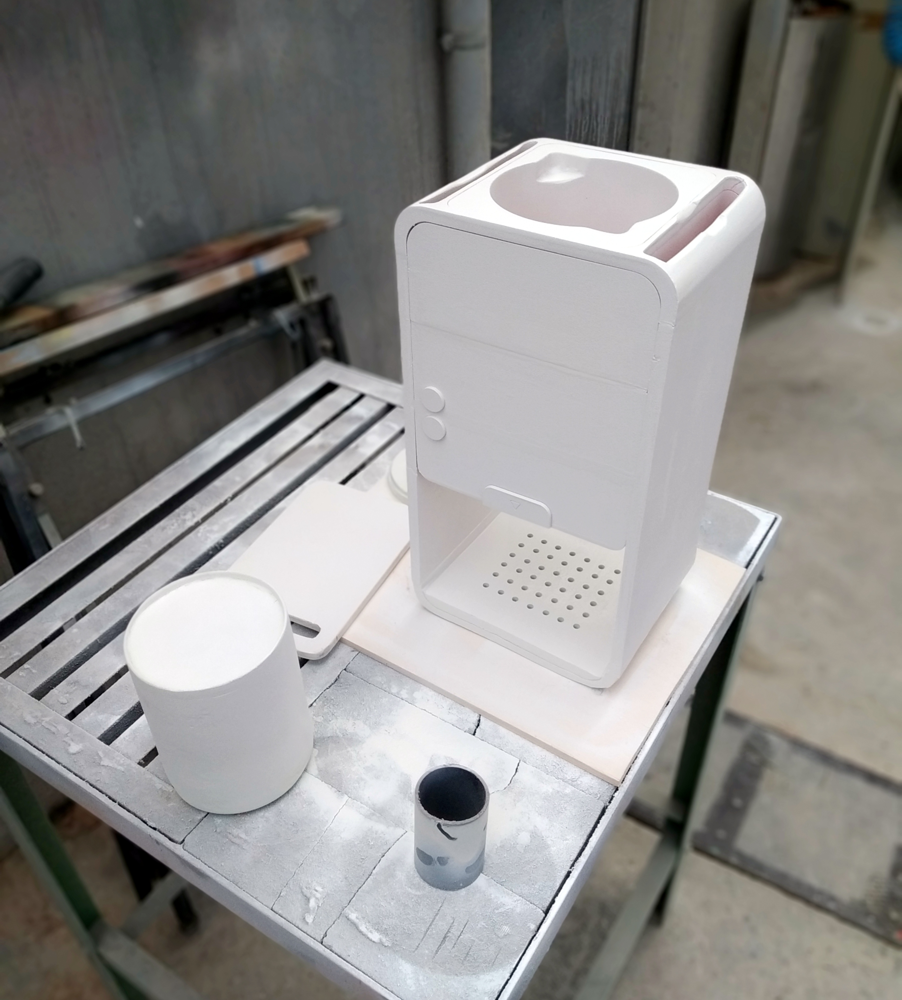

×
Push n' Pour
Push n' Pour is a heating blender intended for a greater serving experience.
Date
2020
My role
Industrial design
Product design
Duration
3 months
Team size
Only me

Reinventing the pouring experience of the heating blenders.
view in AR Android east
view in AR iOS east
Blenders and heating blenders have the same problem: the container, usually glass, is very heavy. It is unpractical for most people, and even more for elders and people suffering with wrist problems.
My main goal for this project was to make a product as practical as possible and simplify the way we serve ourselves when using a heating blender.

How to use it?
Its primary use is to make soup. But you can also make smoothies by disabling the heating option.
- Simply cut your vegetables, put them in.
- It will cook them and mix them.
- After that, simply put a bowl or mug and push the button to pour the soup.
- If you don’t finish it, use the cover and store it in the fridge in its container.
Cutting board
A cutting board is integrated within the device to make sure there is always an available one to be able to cut the vegetables. It can be stored in it when not in use to save space.

Container
The soup container can be easily taken out to be washed or to store the leftover soup, thanks to the top found on the other side of the blender.

Cover
The cover has perforated holes to ensure ventilation, but also to let the soup smells come out and let the user enjoy them.

Screen
The screen is made of out e-ink technology to avoid disturbing light while still allowing functionalities. It allows being able to easily access the different blending modes.

Prototyping
Making the mockup
I built the mockup out of various materials, such as foam, wood and plexiglas. It allowed me to learn how to better work with those materials. This process also ensured that the elements were well proportioned and placed.
